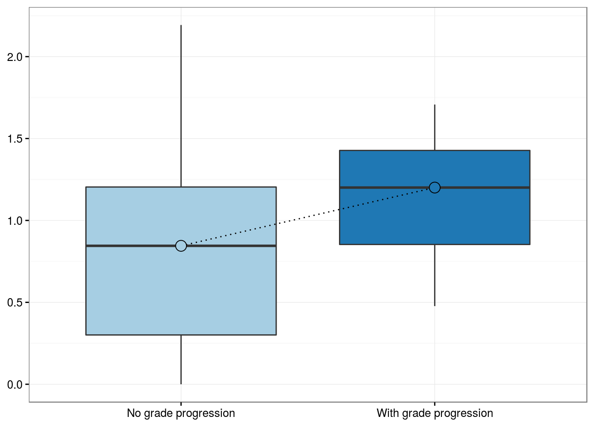
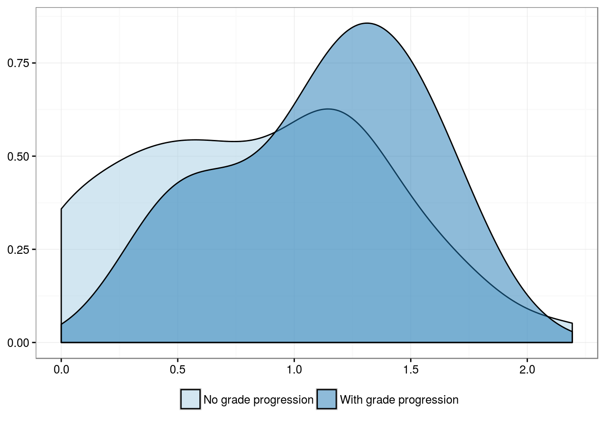
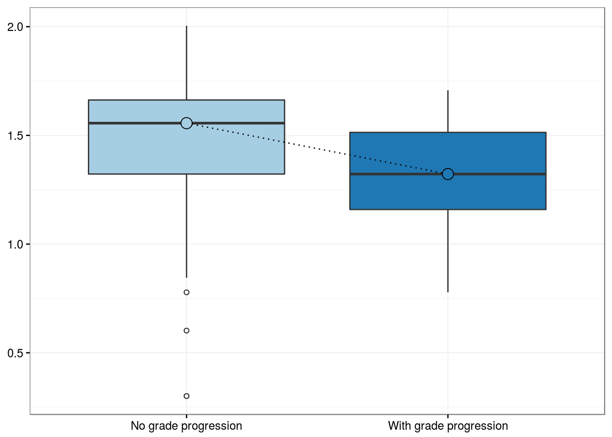
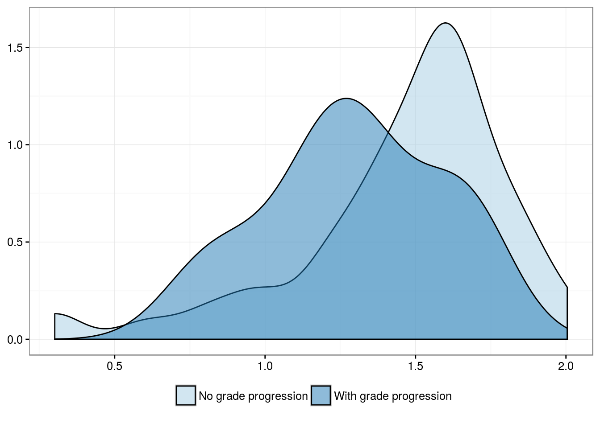
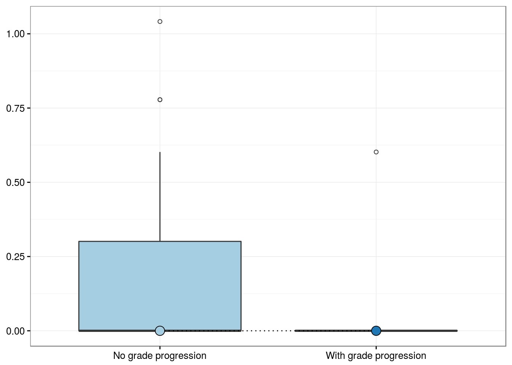
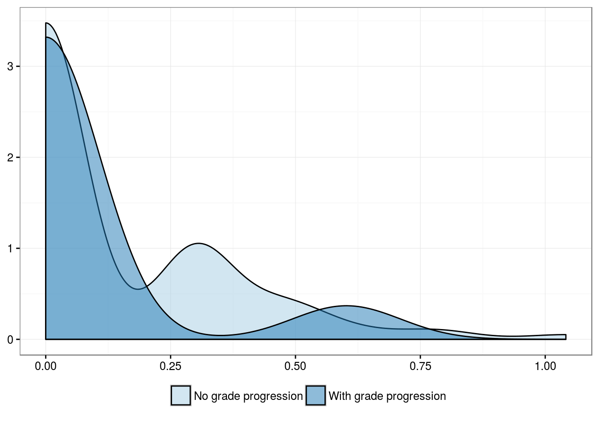
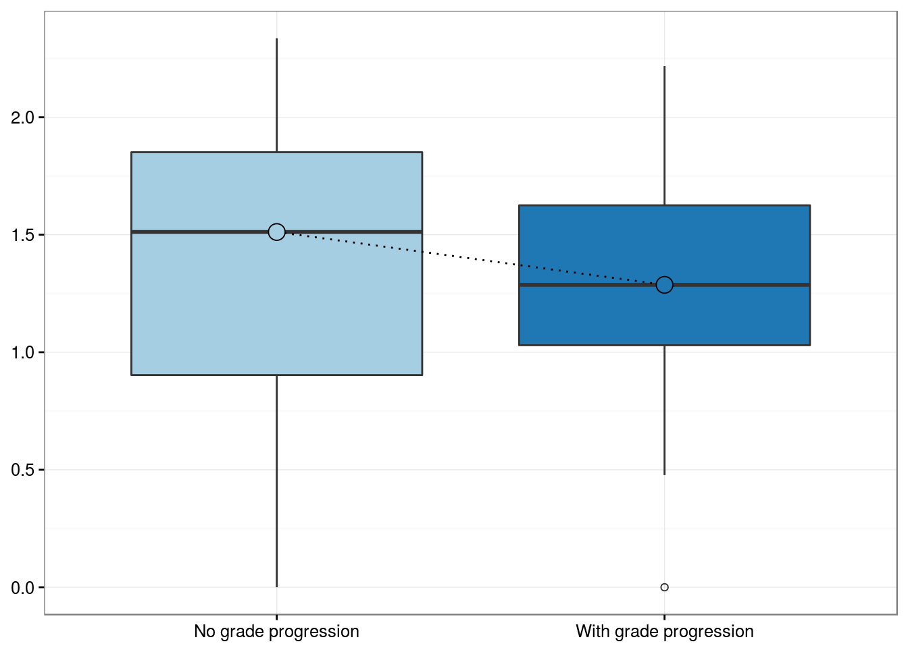
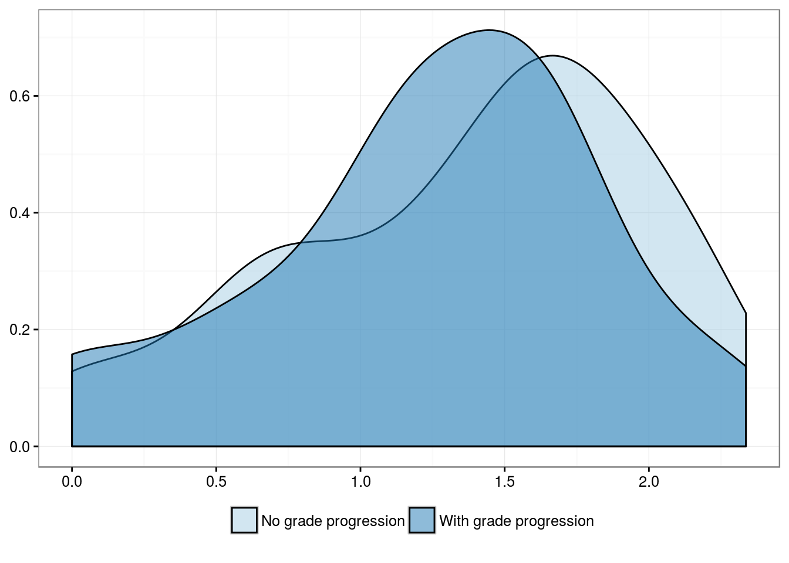
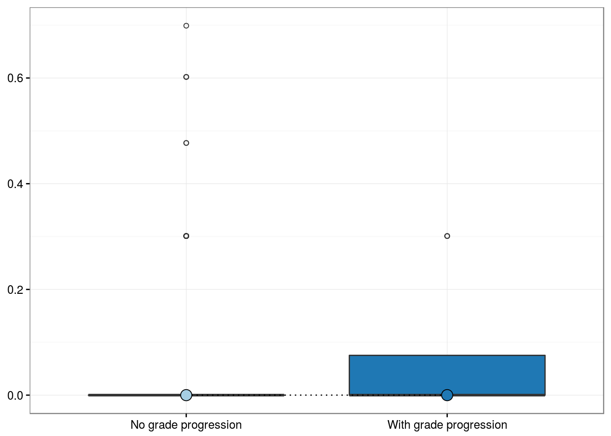

# Loading the datasets
load("../R/df.Rdata")
# Loading libraries
library(knitr)
library(dplyr)
library(broom)
# Sourcing scripts
source("../R/plots.R")
source("../R/scripts.R")
# Global options
opts_chunk$set(message = FALSE, warning = FALSE)
CD8 and Ki67 in tumor
CD8 positivity in lymphocytes infiltrating tumor
x <- df_pairs$cd8_tumor_count_max
y <- df_pairs$grade_any
g_num2(x, y)

nice_table(x, y)
Summary table
| Mean |
14.1 |
18.2 |
| Standard Deviation |
23.8 |
15.4 |
| Median |
6.0 |
15.0 |
| Interquartile Range |
14.0 |
19.5 |
| Minimum |
0.0 |
2.0 |
| Maximum |
155.0 |
50.0 |
k_tab(x, y)
Association test
| Kruskal-Wallis rank sum test |
2.731 |
1 |
0.098 |
Ki67 positivity in lymphocytes infiltrating tumor
x <- df_pairs$ki67_tumor_max
g_num2(x, y)

nice_table(x, y)
Summary table
| Mean |
35.7 |
23.1 |
| Standard Deviation |
22.2 |
15.3 |
| Median |
35.0 |
20.0 |
| Interquartile Range |
25.0 |
19.0 |
| Minimum |
1.0 |
5.0 |
| Maximum |
100.0 |
50.0 |
k_tab(x, y)
Association test
| Kruskal-Wallis rank sum test |
3.353 |
1 |
0.067 |
CD8/Ki67 positivity in lymphocytes infiltrating tumor
x <- df_pairs$cd8ki67_tumor_count_max
g_num2(x, y)

nice_table(x, y)
Summary table
| Mean |
0.6 |
0.3 |
| Standard Deviation |
1.3 |
0.9 |
| Median |
0.0 |
0.0 |
| Interquartile Range |
1.0 |
0.0 |
| Minimum |
0.0 |
0.0 |
| Maximum |
10.0 |
3.0 |
k_tab(x, y)
Association test
| Kruskal-Wallis rank sum test |
1.595 |
1 |
0.21 |
CD8 and Ki67 in stroma
CD8 positivity in lymphocytes infiltrating stroma
x <- df_pairs$cd8_stroma_count_max
g_num2(x, y)

nice_table(x, y)
Summary table
| Mean |
46.9 |
34.2 |
| Standard Deviation |
51.3 |
44.9 |
| Median |
31.5 |
19.0 |
| Interquartile Range |
63.0 |
31.0 |
| Minimum |
0.0 |
0.0 |
| Maximum |
216.0 |
164.0 |
k_tab(x, y)
Association test
| Kruskal-Wallis rank sum test |
0.6383 |
1 |
0.42 |
CD8/Ki67 positivity in lymphocytes infiltrating stroma
x <- df_pairs$cd8ki67_stroma_count_max
g_num2(x, y)

nice_table(x, y)
Summary table
| Mean |
0.3 |
0.2 |
| Standard Deviation |
0.7 |
0.5 |
| Median |
0.0 |
0.0 |
| Interquartile Range |
0.0 |
0.2 |
| Minimum |
0.0 |
0.0 |
| Maximum |
4.0 |
1.0 |
k_tab(x, y)
Association test
| Kruskal-Wallis rank sum test |
0.00263 |
1 |
0.96 |